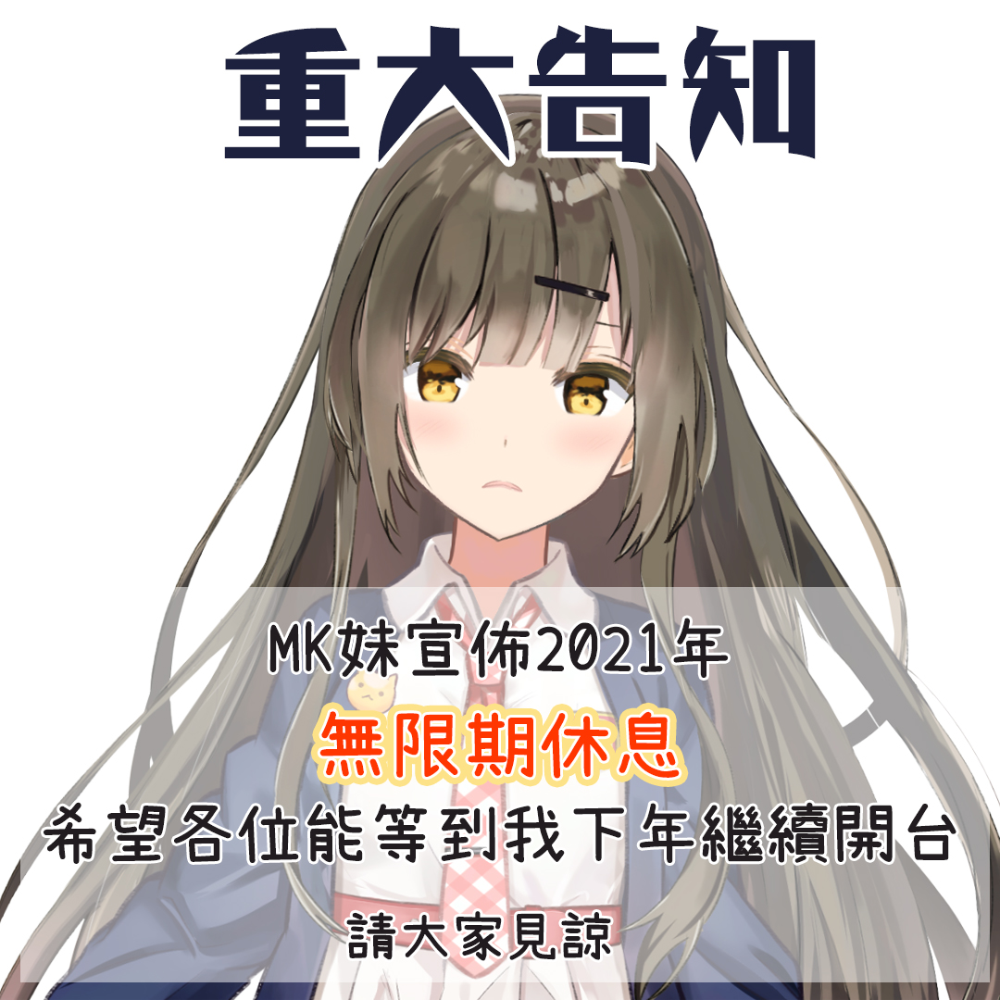

介紹
「我想試下本土的角色可以去到幾盡。」
MK妹，粉絲稱其爲娘娘，是香港一名個人VTuber，於2021年4月17日出道。
MK妹從來都無固定直播主題，想做就做，想試就試，想抽幾支煙就抽幾支煙。這一切都是爲了挑戰香港本土角色的極限。
若想更加瞭解MK妹，歡迎閱覽第156期《大學線》與MK妹進行的專訪。

精華
活動
行程

無限期休息中
不過是2021年的事。
「我想試下本土的角色可以去到幾盡。」
MK妹，粉絲稱其爲娘娘，是香港一名個人VTuber，於2021年4月17日出道。
MK妹從來都無固定直播主題，想做就做，想試就試，想抽幾支煙就抽幾支煙。這一切都是爲了挑戰香港本土角色的極限。
若想更加瞭解MK妹，歡迎閱覽第156期《大學線》與MK妹進行的專訪。
無限期休息中
不過是2021年的事。